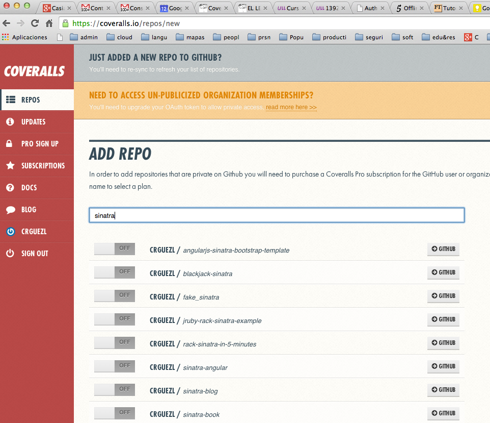

Siguiente: Guard Subir: Integración Contínua: Travis Anterior: Travis en la Línea Índice General Índice de Materias
Coveralls works with your continuous integration server to give you test coverage history and statistics.
When you log into Coveralls for the first time, it will ask you to select repositories to monitor.
It works like Travis CI, listing all of your repositories for you to enable and disable access. (You can also click a button to resynchronize the repository list, in case you’ve added a repository since last syncing). 
To set up Coveralls, we need to add a file that tells Coverall what to do.
For our project, we need to add a file to the root directory named
.coveralls.yml, in which we'll include a single line of
configuration:
service_name: travis-ciThis tells Coveralls that we're using Travis CI as our CI server. (If you've signed up for a Pro account, then use
travis-pro
instead.)
We also need to add the Coveralls gem to our Gemfile
group :development, :test do gem 'rspec' gem 'rack-test' gem 'coveralls', require: false endFinally, we need to include
coveralls code in our
spec_helper.rb file:
require 'coveralls' Coveralls.wear!
Notice that we have to load the code before the app code.
If you load Coveralls after the application’s code has loaded, then it wouldn’t be able to hook into the application properly.
[~/sinatra/sinatra-selenium/capybara-selenium(master)]$ coveralls --help Commands: coveralls help [COMMAND] # Describe available commands or one specific command coveralls last # View the last build for this repository on Coveralls. coveralls open # View this repository on Coveralls. coveralls push # Runs your test suite and pushes the coverage results to Cover... coveralls report # Runs your test suite locally and displays coverage statistics. coveralls service # View this repository on your CI service's website. coveralls version # See version
When you run the client you get:
[~/sinatra/sinatra-coverall(master)]$ coveralls open No repo_token configured.
If you're running locally, you must have a .coveralls.yml
with your repo_token in it; or,
you must provide a COVERALLS_REPO_TOKEN environment-variable on
the command-line.
[~/sinatra/sinatra-coverall(master)]$ cat .coveralls.yml.bak service_name: travis-ci repo_token: HHhhhhhhh9saXXXXZZZ4444444444xdWh
or
export COVERALLS_REPO_TOKEN=HHhhhhhhh9saXXXXZZZ4444444444xdWh
You can get the token in your coveralls repo page on the right side in the
section REPO TOKEN.
[~/sinatra/sinatra-coverall(master)]$ pwd -P /Users/casiano/local/src/ruby/sinatra/sinatra-coverall